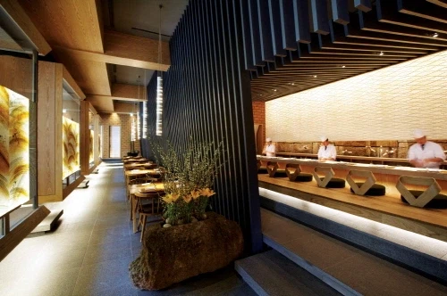
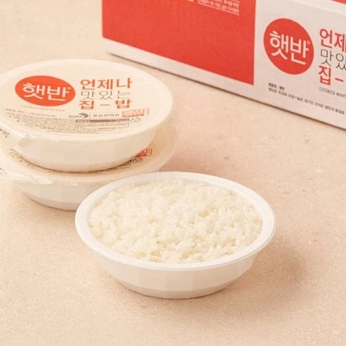

https://bbs.ruliweb.com/best/board/300143/read/76491358

CJ가 청담동 고급 일식집을 운영했던 '우오 스시'
미슐랭 가이드에도 등록됨
많은 사람들이 역시 미슐랭 식당이다 하면서
음식을 먹으며 음미 하고 있었음...
근데....
여기서 사건이 터져버림...
어떤 한 손님이...
공기밥을 달라고 했는데...

여기서 문제는 공기밥이 다 떨어진 상태였고...
손님에게 공기밥은 줘야겠고...
그럼 최후의 수단은?
급하게 햇반을 돌려서 공기밥 용기에 줬다는 거임 ㅋㅋㅋㅋㅋㅋㅋㅋ
ㅋㅋㅋㅋㅋㅋㅋㅋㅋㅋㅋㅋㅋㅋㅋㅋㅋㅋㅋㅋㅋㅋ
ㅋㅋㅋㅋㅋㅋㅋㅋㅋㅋㅋㅋㅋㅋㅋㅋㅋㅋㅋㅋㅋㅋ
급하게 햇반 돌려서 공기밥 용기에 담는 과정을
발견한 손님은 극대노 하면서
CJ에게 항의 했는데
"아니 미슐랭에 소개된 일식집이고, 고급 일식집인건 알겠는데
공기밥이 없다고 급하게 햇반을 돌려서 주다니요...?
하다 못해 그냥 밥이 없다고 하시던가요... 실망이 너무 크네요"
라고 함...
여기서 CJ의 대응은 어땠을까?
사과 했을까?
CJ 입장 : "햇반이 무슨 죄가 있습니까?
글고 햇반이야 말로 사람이 직접 지은 밥 보다 더 맛있고 풍미가 살아 있어요...
반도체 수준에 버금가는 클린룸에서 만드는데...
문제될게 없다구요"
하면서 절대 사과를 안함 ㅋㅋㅋㅋㅋㅋㅋㅋㅋ
그리고 시간이 지나고....
결국 가게는 폐업했다
일단 스시우오 저기는 옛날에 그 가격이면 더 괜찮은 업장이 많아서
밀려서 사라졌음
햇반으로 망한건 아니고 걍 경쟁력이 별로